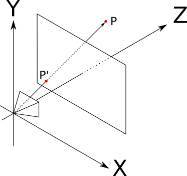
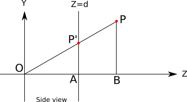
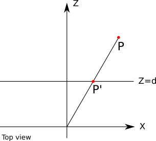
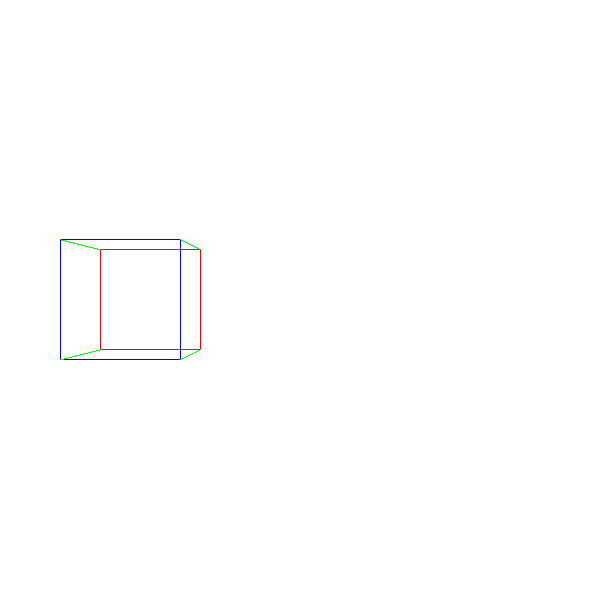

Perspective Projection
So far, we have learned to draw 2D triangles on the canvas, given the 2D coordinates of their vertices. However, the goal of this book is to render 3D scenes. So in this chapter, we’ll take a break from 2D triangles and focus on how to turn 3D scene coordinates into 2D canvas coordinates. We’ll then use this to draw 3D triangles on the 2D canvas.
Basic Assumptions
Just like we did at the beginning of Chapter 2 (Basic Raytracing), we’ll start by defining a camera. We’ll use the same conventions as before: the camera is at \(O = (0, 0, 0)\), looking in the direction of \(\vec{Z_+}\), and its “up” vector is \(\vec{Y_+}\). We’ll also define a rectangular viewport of size \(V_w\) and \(V_h\) whose edges are parallel to \(\vec{X}\) and \(\vec{Y}\), at a distance \(d\) from the camera. The goal is to draw on the canvas whatever the camera sees through the viewport. If you need a refresher on these concepts, refer to Chapter 2 (Basic Raytracing).
Consider a point \(P\) somewhere in front of the camera. We’re interested in finding \(P\, '\), the point on the viewport through which the camera sees \(P\), as shown in Figure 9-1.

This is the opposite of what we did with raytracing. Our raytracer started with a point in the canvas, and determined what it could see through that point; here, we start from a point in the scene and want to determine where it is seen on the viewport.
Finding P’
To find \(P\, '\), let’s look at the setup shown in Figure 9-1 from a different angle, literally. Figure 9-2 shows a diagram of the setup viewed from the “right,” as if we were standing on the \(\vec{X}\) axis: \(\vec{Y_+}\) points up, \(\vec{Z_+}\) points to the right, and \(\vec{X_+}\) points at us.

In addition to \(O\), \(P\), and \(P\, '\), this diagram also shows the points \(A\) and \(B\), which help us reason about it.
We know that \(P\, '_z = d\) because we defined \(P\, '\) to be a point on the viewport, and we know the viewport is embedded in the plane \(Z = d\).
We can also see that the triangles \(OP\, ' A\) and \(OPB\) are similar, because their corresponding sides (\(P\, 'A\) and \(PB\), \(OP\) and \(OP\, '\), and \(OA\) and \(OB\)) are parallel. This implies that the proportions of their sides are the same; for example:
\[{|P\, 'A| \over |OA|} = {|PB| \over |OB|}\]
From that, we get
\[|P\, 'A| = {|PB| \cdot |OA| \over {|OB|}}\]
The (signed) length of each segment in that equation is a coordinate of a point we know or we’re interested in: \(|P\, 'A| = P\, '_y\), \(|PB| = P_y\), \(|OA| = P\, '_z = d\), and \(|OB| = P_z\). If we substitute these in the equation we get
\[P\, '_y = {P_y \cdot d \over P_z}\]
We can draw a similar diagram, this time viewing the setup from above: \(\vec{Z_+}\) points up, \(\vec{X_+}\) points to the right, and \(\vec{Y_+}\) points at us (Figure 9-3).

Using similar triangles again in the same way, we can deduce that
\[P\, '_x = {P_x \cdot d \over P_z}\]
We now have all three coordinates of \(P\, '\).
The Projection Equation
Let’s put all this together. Given a point \(P\) in the scene and a standard camera and viewport setup, we can compute the projection of \(P\) on the viewport, which we call \(P\, '\), as follows:
\[P\, '_x = {P_x \cdot d \over P_z}\]
\[P\, '_y = {P_y \cdot d \over P_z}\]
\[P\, '_z = d\]
\(P\, '\) is on the viewport, but it’s still a point in 3D space. How do we get the corresponding point in the canvas?
We can immediately drop \(P\, '_z\), because every projected point is on the viewport plane. Next we need to convert \(P\, '_x\) and \(P\, '_y\) to canvas coordinates \(C_x\) and \(C_y\). \(P\, '\) is still a point in the scene, so its coordinates are expressed in scene units. We can divide them by the width and height of the viewport. These are also expressed in scene units, so we obtain temporarily unit-less values. Finally, we multiply them by the width and height of the canvas, expressed in pixels:
\[C_x = {{P\, '_x \cdot C_w} \over {V_w}}\]
\[C_y = {{P\, '_y \cdot C_h} \over {V_h}}\]
This viewport-to-canvas transform is the exact inverse of the canvas-to-viewport transform we used in the raytracing part of this book. And with this, we can finally go from a point in the scene to a pixel on the screen!
Properties of the Projection Equation
Before we move on, there are some interesting properties of the projection equation that are worth discussing.
The equations above should be compatible with our day-to-day experience of looking at things in the real world. For example, the farther away an object is, the smaller it looks; and indeed, if we increase \(P_z\), we get smaller values of \(P\, '_x\) and \(P\, '_y\).
However, things stop being so intuitive when we decrease the value of \(P_z\) too much; for negative values of \(P_z\), that is, when an object is behind the camera, the object is still projected, but upside down! And, of course, when \(P_z = 0\) we’d divide by zero and the universe would implode. We’ll need to find a way to avoid these unpleasant situations; for now, we’ll assume that every point is in front of the camera and deal with this in a later chapter.
Another fundamental property of the perspective projection is that it preserves point alignment: if three points are aligned in space, their projections will be aligned on the viewport. In other words, a straight line is always projected as a straight line. This might sound too obvious to be worth mentioning, but note, for example, that the angle between two lines isn’t preserved: in real life, we see parallel lines “converge” at the horizon, such as when driving on a highway.
The fact that a straight line is always projected as a straight line is extremely convenient for us: so far we have talked about projecting a point, but how about projecting a line segment, or even a triangle? Because of this property, the projection of a line segment between two points is the line segment between the projection of two points; and the projection of a triangle is the triangle formed by the projections of its vertices.
Projecting Our First 3D Object
This means we can go ahead and draw our first 3D object: a cube. We define the coordinates of its 8 vertices, and we draw line segments between the projections of the 12 pairs of vertices that make the edges of the cube, as seen in Listing 9-1:
ViewportToCanvas(x, y) {
return (x * Cw/Vw, y * Ch/Vh);
}
ProjectVertex(v) {
return ViewportToCanvas(v.x * d / v.z, v.y * d / v.z)
}
// The four "front" vertices
vAf = [-2, -0.5, 5]
vBf = [-2, 0.5, 5]
vCf = [-1, 0.5, 5]
vDf = [-1, -0.5, 5]
// The four "back" vertices
vAb = [-2, -0.5, 6]
vBb = [-2, 0.5, 6]
vCb = [-1, 0.5, 6]
vDb = [-1, -0.5, 6]
// The front face
DrawLine(ProjectVertex(vAf), ProjectVertex(vBf), BLUE);
DrawLine(ProjectVertex(vBf), ProjectVertex(vCf), BLUE);
DrawLine(ProjectVertex(vCf), ProjectVertex(vDf), BLUE);
DrawLine(ProjectVertex(vDf), ProjectVertex(vAf), BLUE);
// The back face
DrawLine(ProjectVertex(vAb), ProjectVertex(vBb), RED);
DrawLine(ProjectVertex(vBb), ProjectVertex(vCb), RED);
DrawLine(ProjectVertex(vCb), ProjectVertex(vDb), RED);
DrawLine(ProjectVertex(vDb), ProjectVertex(vAb), RED);
// The front-to-back edges
DrawLine(ProjectVertex(vAf), ProjectVertex(vAb), GREEN);
DrawLine(ProjectVertex(vBf), ProjectVertex(vBb), GREEN);
DrawLine(ProjectVertex(vCf), ProjectVertex(vCb), GREEN);
DrawLine(ProjectVertex(vDf), ProjectVertex(vDb), GREEN);We get something like Figure 9-4.

Success! We’ve managed to go from the geometrical 3D representation of an object to its 2D representation as seen from our synthetic camera!
Our approach is very artisanal, though. It has many limitations. What if we want to render two cubes? Would we have to duplicate most of the code? What if we want to render something other than a cube? What if we want to let the user load a 3D model from a file? We clearly need a more data-driven approach to representing 3D geometry.
Summary
In this chapter, we’ve developed the math to go from a 3D point in the scene to a 2D point on the canvas. Because of the properties of the perspective projection, we can immediately extend this to projecting line segments and then to 3D objects.
But we have left two important issues unresolved. First, Listing 9-1 mixes the perspective projection logic with the geometry of the cube; this approach clearly won’t scale. Second, because of the limitations of the perspective projection equation, it can’t handle objects that are behind the camera. We will address these issues in the next two chapters.